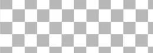
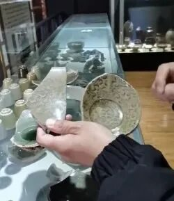
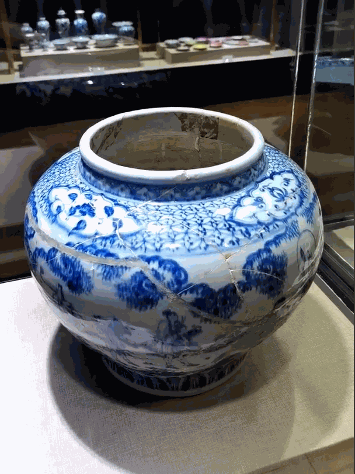
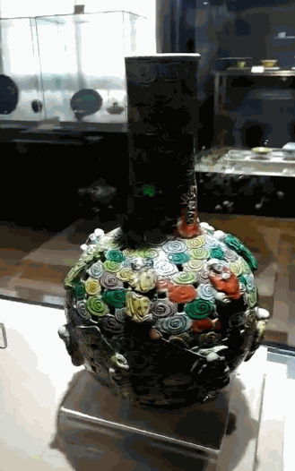
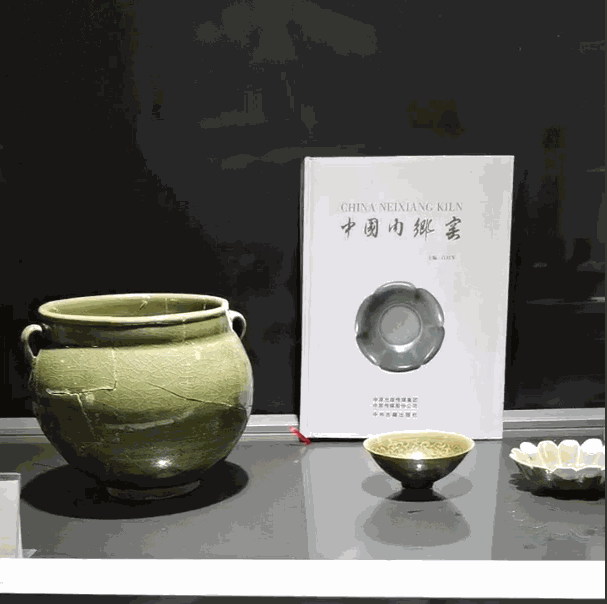

黄土沉沙 瓷梦千年
-行者无疆·赓续前行-
黄土沉沙
瓷梦千年
▷▷ ceramic ◁◁

内乡县菊潭古瓷博物馆
几天的文化旅途如梦似幻
一路上
我们看尽淮左好景
历遍豫南佳韵
着眼古今收获良多
本次文化调研很快就要告一段落。
continue······
在实践的第四天，我们有幸邀请到内乡县菊潭古瓷博物馆馆长李海涛先生，在李馆长的带领下我们与这些存世的瓷器对话，透过玻璃展台与这些瓷器相望，仿佛穿越华夏千年时空，跟随他们感受豫南千年间风起云落。
▷▷ ceramic ◁◁
千年风华陶土藏
馆长首先向我们展示了在邓窑出土瓷片，有意思的是我们发现瓷片上刻有窑工的姓氏，指尖划过瓷片上的姓氏，我们仿佛看到数百年前的匠人欢天喜地的在自己的作品上署名的样子，我们终于感到文物并不是是冷冰冰的，他们是有血有肉，在创始之初便被创作者赋予了灵魂。

驻足于这尊由出土瓷片修复得到的明代空白期青花瓷前，李馆长向我们讲解了青花的明代空白期是指正统景泰天顺，这个时期战争纷飞，由于青花烧制成本高，所以朝廷便禁止烧制，这也造成了青花瓷的明代空白期。

一尊粉彩镂空套瓶吸引了我们的注意，套瓶色彩华丽工艺精美，从镂空的地方看去可以看到里面还套着一个瓶子，其中蕴藏的便是古代匠人的千锤百炼与不断革新。

盘子是日常生活必须品，盘子上绘纹也颇有讲究，李馆长说这叫做有其画必有其意。家中有人做官盘子上绘荷叶莲蓬，有清廉之意，用襟带扎着，意为约束自己清廉，为家中老人过寿，可以定制一个盘子外面上是一个“寿”字里面绘一个寿星叫做“寿上添寿”。
▷▷ ceramic ◁◁
烽火燃尽孤烟起
南宋叶真《坦斋笔衡》载：“本朝以定州白瓷有芒不堪用，遂命汝州造青窑器，故河北、唐、邓、耀州悉有之，汝窑为魁。”地处商於古道要塞的邓窑具有其得天独厚的竞争优势。
1992年丹江沉船出土了一大批精美的青瓷，经故宫博物院考证这种独特的麦苗青釉色属于邓瓷，由此可见宋时邓窑的工艺之高超以及商贸之发达。

北宋末年，辽人起兵首先攻陷豫西南，朝廷南迁带走了邓窑的优秀匠人，至此曾为一代官窑的邓窑开始走向衰落，最终窑址毁于洪水从百里窑厂化为一片废墟。
邓窑起于唐兴于宋终于元代末年，最后只留下一句“孤村陶烟时起，前事宛然在目”。
行者无疆·赓续前行
人的一生须臾光阴稍纵即逝，百年不过一捧白骨，只有这些陶土碎瓷长埋地下，在千百年后向我们诉说王谢贵族的阴谋纷争抑或是寻常百姓平安喜乐的一生。
来源 | 行者无疆实践团
文字 | 胡心怡
排版 | 高懿玢
审核 | 温兆琪 朱华玮